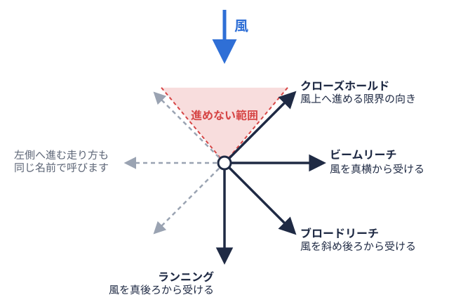
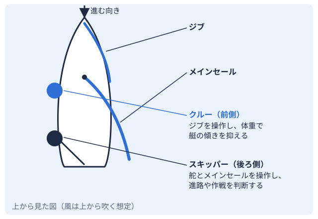
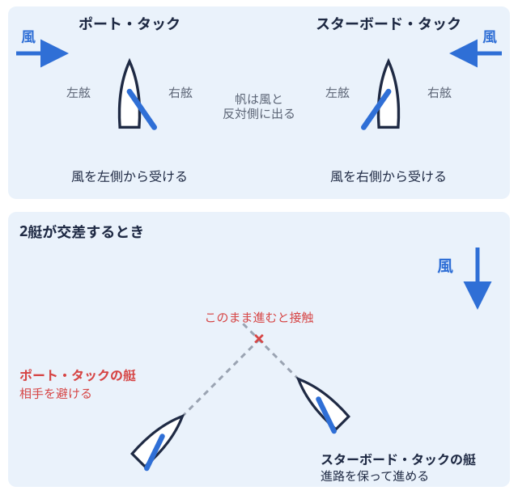

セーリング技術 2026-10-19
ヨットの風向き判断のコツ｜風の振れ・ブローを海上で読む基本
ヨットは風の力で進む競技です。レース中は、風向も風の強さも一定ではなく、数十秒から数分のあいだに変わっていきます。上級生やコーチから「今のは振れたね」「次のブローが来る」と声をかけられても、新入部員のうちは何を見てそう判断しているのかが分かりにくいかもしれません。この記事では、海上で風向と風の強弱をどう観察し、どう判断の材料にするかを、ヤマハ発動機やB&G財団の入門解説、米国セーリング協会（US Sailing）やSailing Worldなど海外媒体の記事をもとに整理します。なお、ここで紹介する考え方は一般論です。艇種（470級全長4.7mの2人乗り競技用ヨット。大きな追い風用の帆とワイヤーを使う。 ・スナイプ級2人乗りの競技用ヨット。追い風用の大きな帆を持たず、ワイヤーも使わない。など）、水域全国の大学ヨット部を地域ごとに分けた区分。北海道から九州まで全国に9つある。、その日の風の条件によって適した判断は変わるため、自分の部の練習では先輩やコーチに確認しながら試してください。
・スナイプ級2人乗りの競技用ヨット。追い風用の大きな帆を持たず、ワイヤーも使わない。など）、水域全国の大学ヨット部を地域ごとに分けた区分。北海道から九州まで全国に9つある。、その日の風の条件によって適した判断は変わるため、自分の部の練習では先輩やコーチに確認しながら試してください。
この記事で扱う範囲｜天気図とは別の「海上での観察」
風を読む作業は、大きく2つの段階に分けられます。出艇前に天気図や予報で全体の傾向をつかむ段階と、海に出てから目の前の風を観察して判断する段階です。前者はヨット部の天気図の読み方で扱っています。この記事は後者、つまりレースや練習の最中に「風向」と「風の強弱」をどう見るかに絞ります。
ここで使う言葉を先に整理しておきます。
- 風向の振れ（シフト）: 風が吹いてくる方向が変わること
- ブロー（パフ）: 周囲より風が強い部分。水面が暗く見えることが多いとされます
- レル（ルル）: 周囲より風が弱い部分
- リフト: 風上自分の艇から見て、風が吹いてくる側。風上へ進むにはジグザグに走る必要がある。

へ向かって走っているとき、風が艇の後ろ寄りに変わり、それまでより風上へ切り上がれるようになる変化 - ヘッダー: 同じく風上へ向かって走っているとき、風が艇の前寄りに変わり、それまでの針路を保てなくなる変化
リフトとヘッダーの定義は、海外の解説（boats.comなど）で、風が艇首側に変わるとヘッダー、艇尾側に変わるとリフトとされています。なお、「レル」「ルル」の呼び方は部や地域で異なる場合があります。
風向と風の強弱を分けて観察する理由
風向の変化と風の強さの変化は、同時に起きることが多いものの、レースの判断では別々に考える場面があります。Sailing Worldの記事は、風が弱いときは「圧力（風の強さ）の増加のほうが小さな振れより大きな意味を持つ」、風が強く艇がフルにハイクアウト艇が傾きすぎないよう、体を艇の外側へ乗り出して重しにすること。しているときは「振れこそが重要で、大きなブローでも小さな振れの差を埋められない」という趣旨の整理をしています。US SailingのDavid Dellenbaugh氏の記事も、強風では艇がすでに力過多になっているため、強いブローを追うより風向の変化を生かすほうが価値が大きいと述べています。
つまり、「風が強そうな側へ行けば得」「振れた側へ行けば得」と一つの型に当てはめるのではなく、今日の風が弱いのか強いのかによって、重視する観察ポイントが変わるという考え方です。ただし、これらは海外の著名なコーチ・解説者の見方であり、日本の大学ヨット部のすべての条件に当てはまるとは限りません。
風向の振れを見つける3つの方法
「風が振れたのか、自分の舵取りがぶれただけなのか」を見分けることが、最初の関門です。海外の戦術解説（offshoresailing.comなど）は、振れを検知する手段として次の3つを挙げています。
1. コンパス（方位）を見る
コンパスを積んだ艇では、クルー2人乗りの艇で、前側に座って小さな帆などを操作し、体重を使って艇の傾きを抑える人。  
2. 陸上の目標物を見る
風上側にある建物や山などの目標物と自分の艇の位置関係から、角度の変化を見る方法です。この方法は、タック風を艇の左右どちら側から受けているかを表す言葉。右ならスターボード、左ならポート。をして2回も針路を変えると、目標物に対する角度が変わってしまい、信頼しにくくなるとされています。出艇前にコースを走って確認するときに向いた方法と考えるとよいでしょう。
3. 周りの艇との位置関係を見る
近くの艇の動きから、風が振れたのか、自分たちだけ条件が違うのかを推測する方法です。同じ解説では、競争相手が急に前へ出たように見えても、距離が変わらないまま並んで進んでいるときは、ヘッダーが両艇に等しく作用している可能性があると述べています。
見分けるには「安定した舵取り」が前提
これらの方法の前提として、同じ戦術解説は、一定の針路を保って走れていないと、振れとその艇自身のふらつきが区別できないと指摘しています。風向判断は、基本的な操船が安定してはじめて意味を持ちます。操船の土台は、タッキング・ジャイビングのコツやヒール角度のコントロール方法もあわせて参考にしてください。
セールを手がかりにする｜テルテールと艇のヒール
コンパスがなくても、ヨットには風を知る手がかりが付いています。ヤマハ発動機の入門ページには、風向を知る手がかりの少ない洋上では「風見や波の立ち方などで風向を確かめます」と書かれています。さらに、セール風の力を受けて艇を進ませる布製の帆。艇には大きさの違う帆を組み合わせて使う。 に付けたテルテール（毛糸や短い帯）について、風上側が乱れるときはシート帆を引いたり緩めたりして、帆の開き具合を調整するためのロープ全般。の出しすぎかラフしすぎ、風下自分の艇から見て、風が吹いていく側。風上の反対側。追い風で進む向き。側が乱れるときはシートの引き込みすぎかベアしすぎのサインとされ、両側がきれいに流れている状態がベストトリムと説明されています。
に付けたテルテール（毛糸や短い帯）について、風上側が乱れるときはシート帆を引いたり緩めたりして、帆の開き具合を調整するためのロープ全般。の出しすぎかラフしすぎ、風下自分の艇から見て、風が吹いていく側。風上の反対側。追い風で進む向き。側が乱れるときはシートの引き込みすぎかベアしすぎのサインとされ、両側がきれいに流れている状態がベストトリムと説明されています。
この「きれいに流れていた状態が乱れる」という変化は、風向が変わったサインの一つになりえます。B&G財団のヨット講座Lesson5でも、多くのヨットは風上に対して約45度まで切り上がれると説明されています。海外の戦術解説（offshoresailing.comなど）は、セールがはためく（ラフィングする）現象が、大きな風の振れを示している場合があると述べています。風が艇首側に変わるヘッダーでは、同じ針路を保てなくなり、このかたちで気づくことがあります。
ただし、セールのはためきは、自分の舵やトリムロープなどを使って、帆の張り具合や開き具合を風に合わせて調整すること。の操作でも起こります。テルテールの乱れを見たら、まず自分の操作が原因ではないかを疑い、そのうえで風の変化かどうかを判断する、という順序が基本になります。
水面から風の強弱を読む｜ブローとレルの見方
風の強弱の変化は、風が自分の艇に届く前に水面で見つけられる場合があります。US Sailingや海外の解説では、次のような手がかりが挙げられています。
- ブロー: 小さな波紋が密に並んだ暗い水面。白波（ホワイトキャップ）が見える場合もある
- レル: 周囲より明るく滑らかな水面
- 艇の反応: 近くの艇のヒール風を受けた艇が横に傾くこと。傾きすぎると転覆しやすいため、体重などで抑える。やセールの様子が変わる
- 陸上の手がかり: 旗、煙の流れなど
米国のレース誌の記事（Cruising World掲載のHow to Read the Wind）は、水面を見るときのコツとして、まず艇の近く（10艇身程度）から見て徐々に遠くへ視線を広げることや、偏光サングラスで反射を抑えること、できるだけ体を起こして見渡すことを勧めています。ヨットでは体勢の自由度が限られますが、風下側に座っているクルーが前方の水面を観察する、といった役割分担は、2人乗り艇で取り入れやすい方法です。役割の違いはスキッパーとクルーって何が違う？で整理しています。
ブローは「風向の変化」も連れてくる
Spinsheetの記事では、ブローの形によって風向の変わり方が違うとされています。扇状に広がる「キャッツポー型」では、中心より右側の艇は左に、左側の艇は右に振れた風を受ける傾向があり、入り方によって風向が変わります。帯状の前縁を持つ「ライン型」では、ブローが来る方向へ風が振れやすいとされます。ただし、同じ記事は、風向の変化を常に予測できるわけではないとも述べています。ブローが見えたら「強さが変わる」と「向きも変わるかもしれない」の両方を意識しておく、くらいの捉え方が現実的です。
規則的に振れるか、一方向に振れ続けるか
風向の変化には、大きく2つのパターンがあるとされています。windcheckmagazine.comなどの解説では、ある平均方向を中心に左右へ行き来する「オシレーティング（振動型）」と、一方向へ変わり続ける「パーシステント（持続型）」に分けて説明されています。どちらのパターンかによって、タックを入れるべきかどうかの判断が変わるため、風上に向かう区間（アップウィンド）のたびにこの問いを自分に向けるとよいとされます。
| パターン | 風の変わり方 | 判断の方向性（一般論） |
|---|---|---|
| オシレーティング | 平均方向のまわりを往復する | ヘッダーでタックし、風上マークへ直線的に近づく考え方が紹介されている |
| パーシステント | 一方向へ変わり続ける | リフトが続くときは、振れ続ける向きに合わせた位置取りを考える、という注意が紹介されている |
offshoresailing.comの解説では、ヘッダーのときにタックすると風上マークへより直線的に近づけるのに対し、リフトのときにタックするとコースを無駄にジグザグに走りやすいとされています。また、リフトが続くときは「ただの一時的なリフトではなく、風が持続的に振れているのではないか」と疑い、振れの向きに合わせた位置取りを考える、という注意も紹介されています。
大切なのは、これらは「こうすれば必ず勝てる」という公式ではないことです。現場では、潮の流れ、他艇との位置関係、風上マークまでの距離（レイラインに出てしまうと、振れが戻っても取り返しにくい場合があります）などが同時に影響します。自分の水域でどのパターンが出やすいかは、先輩やコーチの経験がもっとも参考になります。
地形や海風の影響を知っておく
水域によって、風の癖は変わります。海岸近くでは、日中に陸が海より早く暖まって海から陸へ向かう風（海風）が吹き、夜間は逆向きの風（陸風）になるとされています。海風の仕組みは、spaceshipearth.jpの「海陸風」の解説などで確認できます。こうした局地的な風は、天気図の傾度風とは別の要因で風向・風速を変えます。陸地に近い側、建物や山の影響を受けやすい側、沖側では、風向も強さも異なる場合があります。
自分たちの水域でどの方角に陸があり、どんな風の癖があるのかは、水域一覧で水域を確認したうえで、先輩の経験を聞いておくと理解が深まります。関東水域の加盟大学は関東の大学ディレクトリから、たとえば早稲田大学のページのように大学ごとに確認できます。ただし、ヨットマニアの大学ディレクトリは関東と近畿北陸の加盟大学のみが対象で、全国の大学を網羅しているわけではありません。
出艇前と練習中にできる観察の習慣
風を読む力は、レースの場だけで身につくものではありません。練習の中で、次のような習慣を持つと、観察の精度を段階的に上げやすくなります。
- 出艇前に風を見る: 陸上の旗や木の揺れ、水面の暗い部分を数分見る。出艇前の天気図の確認は天気図の読み方も参考にする
- スタート前にコースを走る: windcheckmagazine.comの解説では、スタート前にマークを何度か回り、背後の目標物と風の様子を見てレイラインと振れを確認する方法が紹介されている
- 一定の針路で走り、乱れを観察する: 舵のぶれと風の変化を区別するため、まず安定した直進を心がける
- 観察を声に出して共有する: 2人乗り艇では「右から暗いのが来る」「少し振れた」とクルーとスキッパー2人乗りの艇で、後ろ側に座って舵と大きな帆を操作し、進む方向を決める人。が声を掛け合う
- 練習後に振り返る: 「いつ振れたと感じたか」「その判断は合っていたか」を、先輩やコーチに聞く
レースのルールの基本はヨットレースのルール基礎にまとめています。風上へ向かう途中でどちらのタックに入るかを決めるときは、他艇との航路権の関係も同時に考える必要があります。
風向判断が勝敗に結びつく場面を観戦で確かめる
観戦するときも、風向・風の強弱への注目ポイントを知っていると見え方が変わります。同じ水域の艇が、同じレグでなぜ違うタックを選んだのか、一方向へ進んだ艇が風が変わったときにどうなったのか、といった違いに気づきやすくなります。ヨットマニアの大会カレンダーで予定を確認し、成績PDFリンク一覧で水域ごとの結果を見比べると、大会ごとの順位の動きにも関心が向きやすくなります。大会の位置づけは大学ヨットの水域予選とは？で整理しています。成績表だけから「その日の風がどうだったか」までは読み取れないので、風の話題は観戦レポートや選手・コーチの話と組み合わせて理解してください。
まとめ
- 風の判断は、風向の変化（振れ）と風の強弱（ブロー・レル）を分けて観察する
- 振れの検知には、コンパス、陸上の目標物、周りの艇との位置関係といった手段があり、前提は安定した操船
- テルテールやセールの乱れは風の変化のサインになりうるが、自分の操作が原因の場合もある
- 水面の暗い部分や波紋の密度は、風の強さを事前に知る手がかりになる
- ヘッダーでのタックや振れのパターン（オシレーティング／パーシステント）は一般論であり、水域・艇種・状況で判断は変わる
- 自分の水域の風の癖は、先輩・コーチとの対話と練習後の振り返りで身につける
風向き判断は、一度覚えれば終わりというものではありません。練習のたびに「今の風はどうだったか」を言葉にしてみることが、観察力を育てる出発点になります。
出典
- セーリングのいろいろ | ヤマハ発動機 マリン製品
- ヨット講座 Lesson5 | ブルーシー・アンド・グリーンランド財団
- Racing Tactics: Wind Shifts | offshoresailing.com
- Wind direction: oscillating or persistent | Windcheck Magazine
- Wind Shifts and More Efficient Sailing Upwind | boats.com
- Speed & Smarts: In heavy air, play the shifts | US Sailing
- Why Wind Shifts Matter More Than You Think | Sailing World
- What's the Shape of the Wind? | Spinsheet
- How to Read the Wind | Cruising World
- 海陸風（land and sea breeze） | spaceshipearth.jp
- 全日本学生ヨット連盟
PR
この部活・競技を応援したい方へ
体育会学生を支援するプラットフォーム「ツナカレ」で、応援できる部活を探せます。
PR
取材してほしい部活を募集中
あなたの部活・大会を取材してほしい方はこちらからご依頼ください。
オフシーズン・引退後に、長期インターンという選択
部活で培った力を実務で試す。16タイプ診断（30秒）で合う企業がわかります。